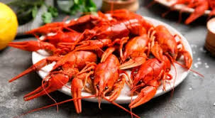

Самое главное о Ростовской кухне
Кулинария Ростова-на-Дону, столицы Юга России и сердца Донского края, представляет собой уникальное и яркое сочетание традиций казачьей кухни, изобилия донской рыбы и сильного кавказского влияния.
Блюда пестрят красками и вкусами, ведь каждый гастрономический опыт здесь - неведомый прежде.

Это гастрономический перекресток, где встречаются степное изобилие, речная щедрость и южное гостеприимство. Это кухня, которая точно не оставит туриста голодным!
Популярные блюда донского края
История Ростовской кулинарии
Основа: Казачьи традиции и рыбный промысел (XVII–XIX века)
Кухня региона, в первую очередь, основана на традициях донского казачества, чья жизнь была тесно связана с рекой Дон и Азовским морем. В блюдах преобладали рыба и морепродукты, мясо и сало, овощи и соленья. Именно эти ингредиенты стали фундаментом сегодняшней Ростовской кулинарии.
Торговый город и смешение культур (XIX – начало XX века)
С ростом Ростова-на-Дону как крупного торгового и портового центра его кулинарная культура обогатилась влиянием многочисленных переселенцев и купцов. Кухни пополнились блюдами кавказкого, украинсккого и французкого колоритов.
Советский период и современность
В советское время Донская кухня сохранила свои ключевые черты, но стала более унифицированной. В современную эпоху Ростов-на-Дону завоевал репутацию гастрономической столицы Юга России. Местные шеф-повара активно возрождают и переосмысливают старинные казачьи рецепты, сочетая их с современными кулинарными техниками, при этом сохраняя главные акцентные ингридиенты.
Рестораны, которые стоит посетить каждому тирусту
Ресторан донской кухни, предлагающий гостям погрузиться в атмосферу донских традиций. Уютное заведение, напоминающее сельский дом, где можно попробовать блюда, приготовленные по старинным рецептам.
«Мидийное Место» — это специализированный ресторан-бистро, ориентированный на безупречно свежие морепродукты, прежде всего, мидии и устрицы, которые подаются в формате с акцентом на простоту и качество.
«ОнегинДача» — это ресторан премиум-класса, который воссоздает атмосферу русско-французской дворянской усадьбы XIX века. Меню представляет собой гармоничное сочетание Русской классической и Французской высокой кухни.
Считается одним из главных представителей донской кухни. Ресторан предлагает блюда по старинным рецептам в аутентичной обстановке. Оформление в стиле традиционного казачьего дома ("куреня"), официанты могут быть в национальных костюмах.
Как следует из названия, это заведение ориентировано на раков и другие "гады" (морепродукты). Интерьер выполнен в морской тематике. Специализируется на донских раках, предлагая их в классическом виде и с необычными соусами.
«Хлеб и Сало» — ресторан, который специализируется на домашней кухне, сочетая традиции русской и украинской кулинарии. Атмосфера заведения обычно теплая, уютная, напоминающая домашний или деревенский интерьер.